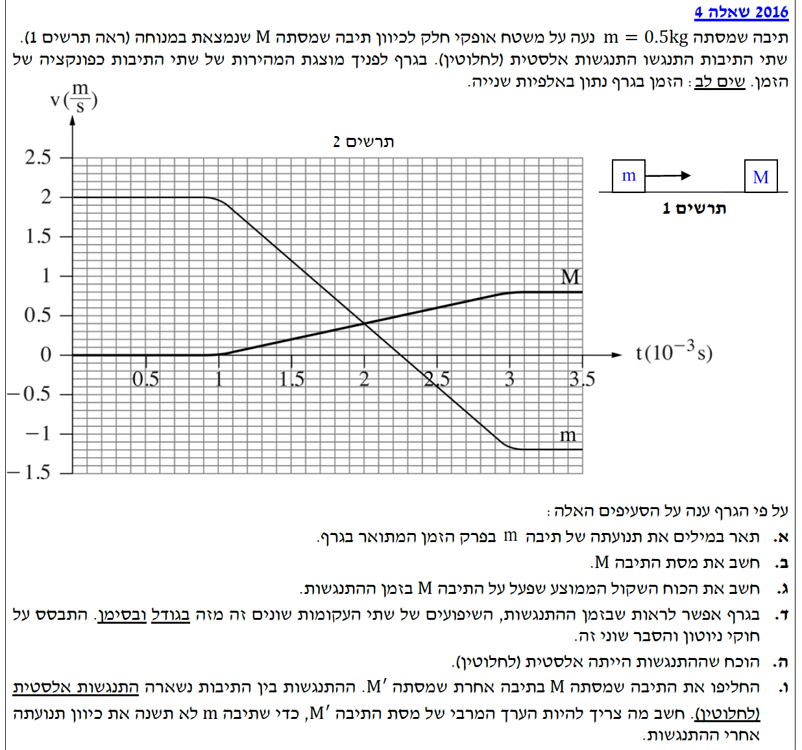

פתרון בגרות בפיזיקה
מכניקה 2016, שאלה 4
פתרון מלא, מוסבר ומונגש צעד-אחר-צעד לתלמידים
עודכן:
--- --:--:--

[תמונת השאלה המקורית]
לא נמצאה תמונה בשם question-image.png באותה תיקייה.
מה נתון:
גרף מהירות-זמן (v-t) עבור תיבה שמסתה \( m = 0.5\text{ kg} \). זמן מיוצג באלפיות שנייה (מילישניות). יש לשים לב לציר הזמן.
מה מחפשים:
תיאור מילולי מדויק של תנועת התיבה \( m \) בכל פרק הזמן המתואר בגרף, תוך התייחסות לכיוון התנועה, גודל המהירות וסוג התנועה (קצובה, תאוצה קבועה).
נוסחאות ועקרונות בשימוש:
- סימן המהירות בגרף (v): קובע את כיוון התנועה (חיובי = ימינה, שלילי = שמאלה).
- שיפוע גרף מהירות-זמן: מייצג את התאוצה \( a = \frac{\Delta v}{\Delta t} \). שיפוע קבוע משמעו תאוצה קבועה.
פתרון צעד-אחר-צעד:
נחלק את תנועת התיבה \( m \) למקטעי זמן לפי השינויים בגרף:
- מ- \( t = 0 \) עד \( t = 1\cdot 10^{-3}\text{ s} \) (לפני ההתנגשות): מהירות התיבה קבועה וחיובית (\( v = 2\text{ m/s} \)). התיבה נעה ימינה בתנועה שוות-מהירות (ללא תאוצה).
- מ- \( t = 1\cdot 10^{-3}\text{ s} \) עד \( t = 2.25\cdot 10^{-3}\text{ s} \): המהירות עדיין חיובית, ולכן התיבה עדיין נעה ימינה. הגרף יורד בקו ישר, כלומר יש לה תאוצה קבועה (שלילית בסימנה). גודל המהירות קטן בהדרגה עד לעצירה.
- ברגע \( t = 2.25\cdot 10^{-3}\text{ s} \): המהירות מתאפסת (\( v = 0 \)). התיבה נעצרת עצירה רגעית ומחליפה כיוון.
- מ- \( t = 2.25\cdot 10^{-3}\text{ s} \) עד \( t = 3\cdot 10^{-3}\text{ s} \): המהירות שלילית, לכן התיבה נעה שמאלה. הגרף ממשיך לרדת, המשמעות היא שגודל המהירות גדל. התנועה היא בתאוצה קבועה.
- מ- \( t = 3\cdot 10^{-3}\text{ s} \) ואילך (לאחר ההתנגשות): מהירות התיבה קבועה ושלילית (\( v = -1.2\text{ m/s} \)). התיבה נעה שמאלה בתנועה שוות-מהירות.
הערת מורה - איך נכון "לתאר תנועה"?
כאשר מבקשים מכם לתאר תנועה של גוף, עליכם להרכיב מעין "תעודת זהות" עבור כל פרק זמן. תעודת זהות מלאה מתייחסת תמיד ל-4 המרכיבים הבאים:
- סוג התנועה: האם הגוף במנוחה? נע במהירות קבועה? בתאוצה קבועה? או בתאוצה משתנה?
- כיוון התנועה: מתקדם בכיוון החיובי או השלילי (נקבע אך ורק לפי סימן המהירות).
- כיוון התאוצה: תאוצה חיובית, שלילית או אפס (נקבע לפי שיפוע גרף המהירות).
- השינוי בגודל המהירות: האם הוא גדל, קטן או קבוע. (טיפ זהב: הימנעו מהמילים "האטה" או "תאוטה"! עדיף להשתמש בביטוי הברור "גודל המהירות קטן". הדבר ימנע מכם להתבלבל בקטעים בהם המהירות והתאוצה שתיהן שליליות).
איך מחלקים את הגרף למקטעים? כל עוד כל המרכיבים הללו נשארים זהים – אנחנו נשארים באותו מקטע תנועה. ברגע שאפילו מרכיב אחד משתנה (למשל הגוף נעצר ומשנה כיוון תנועה, או שהשיפוע בגרף משתנה), מתחיל קטע חדש שעלינו לתאר בנפרד.
מה נתון:
- \( m = 0.5\text{ kg} \).
- מהירות \( m \) לפני: \( v_{m,i} = 2\text{ m/s} \).
- מהירות \( m \) אחרי: מהגרף, 2 משבצות קטנות מתחת ל- (-1), לכן \( v_{m,f} = -1.2\text{ m/s} \).
- מהירות \( M \) לפני: \( v_{M,i} = 0\text{ m/s} \).
- מהירות \( M \) אחרי: מהגרף, 4 משבצות מעל 0 (משבצת קטנה היא 0.1), לכן \( v_{M,f} = 0.8\text{ m/s} \).
מה מחפשים:
את הערך של המסה \( M \).
נוסחאות ועקרונות בשימוש:
המשטח חלק, ולכן סכום הכוחות החיצוניים בציר האופקי שווה לאפס. מתקיים חוק שימור התנע:
\( \Sigma\vec{P}_i = \Sigma\vec{P}_f \implies m_A \vec{v}_A + m_B \vec{v}_B = m_A \vec{u}_A + m_B \vec{u}_B \)
חישוב:
נציב את הנתונים למשוואת חוק שימור התנע (המהירויות הסופיות כ-\(u\)):
\[
\begin{aligned}
m \cdot v_{m,i} + M \cdot v_{M,i} &= m \cdot v_{m,f} + M \cdot v_{M,f} \\
0.5 \cdot 2 + M \cdot 0 &= 0.5 \cdot (-1.2) + M \cdot 0.8 \\
1 &= -0.6 + 0.8 \cdot M
\end{aligned}
\]
נעביר אגפים ונבודד את \( M \):
\[
\begin{aligned}
1.6 &= 0.8 \cdot M \\
M &= \frac{1.6}{0.8} = 2\text{ kg}
\end{aligned}
\]
מסת התיבה היא: \( M = 2\text{ kg} \)
מה נתון:
זמן ההתנגשות (מהגרף): מ- \( t_1 = 1\text{ ms} \) עד \( t_2 = 3\text{ ms} \).
\( \Delta t = 2 \text{ ms} = 2 \cdot 10^{-3} \text{ s} \)
\( M = 2\text{ kg} \), \( v_{M,i} = 0\text{ m/s} \), \( v_{M,f} = 0.8\text{ m/s} \).
מה מחפשים:
את הכוח השקול הממוצע \( \bar{F} \) שפעל על \( M \) בזמן ההתנגשות (גודל וכיוון).
נוסחאות ועקרונות בשימוש (משפט מתקף-תנע):
\( \vec{J} = \Delta\vec{p} \)
\( \vec{J} = \vec{F} \Delta t \)
\( \vec{p} = m\vec{v} \)
חישוב:
נפתח את משוואת מתקף-תנע על ידי השוואת שתי נוסחאות המתקף מהדף (פיתוח המשוואה), ולאחר מכן נציב את הנתונים:
\[
\begin{aligned}
\vec{J} &= \Delta\vec{p} \\
\bar{F}\Delta t &= M \cdot v_{M,f} - M \cdot v_{M,i} \\
\bar{F} \cdot (2 \cdot 10^{-3}) &= 2 \cdot 0.8 - 2 \cdot 0 \\
\bar{F} \cdot 2 \cdot 10^{-3} &= 1.6 \\
\bar{F} &= \frac{1.6}{2 \cdot 10^{-3}} = 800\text{ N}
\end{aligned}
\]
מכיוון שהתוצאה חיובית, הכוח פועל בכיוון החיובי של הציר (ימינה).
גודל הכוח הממוצע שפעל על \( M \) הוא \( 800\text{ N} \), וכיוונו ימינה.
מה נתון:
- השיפוע של \( m \) שלילי ותלול יותר.
- השיפוע של \( M \) חיובי ומתון יותר.
- המסות: \( m = 0.5\text{ kg} \), \( M = 2\text{ kg} \).
מה מחפשים:
להסביר מדוע לשיפועים יש: (1) סימן שונה, (2) גודל שונה, ולהתבסס מפורשות על חוקי ניוטון.
נוסחאות ועקרונות בשימוש:
\( \vec{F}_{mM} = -\vec{F}_{Mm} \) (חוק שלישי)
\( \Sigma\vec{F} = m\vec{a} \) (חוק שני)
הסבר:
מדוע אחד חיובי והשני שלילי?
לפי החוק השלישי של ניוטון, כוח התגובה שמפעילה תיבה \( M \) על תיבה \( m \) מנוגד בכיוונו לכוח שמפעילה התיבה \( m \) על התיבה \( M \). לכן, לפי החוק השני של ניוטון (\( \vec{a} = \frac{\Sigma\vec{F}}{m} \)), תאוצות הגופים יהיו מנוגדות בכיוונן. מכיוון ששיפוע הגרף הוא התאוצה, אחד השיפועים יהיה חיובי והשני שלילי.
מדוע אחד תלול והשני מתון?
נרשום את משוואת התנועה עבור כל גוף בנפרד:
\[ a_m = \frac{F_{Mm}}{m} \quad , \quad a_M = \frac{F_{mM}}{M} \]
אמנם הכוחות שווים בגודלם (חוק 3), אך המסות שונות. מכיוון שהתאוצה עומדת ביחס הפוך למסה, ומכיוון שמסת \( M \) גדולה פי 4 ממסת \( m \), התאוצה של \( M \) תהיה קטנה פי 4 מהתאוצה של \( m \). תאוצה קטנה יותר בערכה המוחלט מתבטאת בגרף בשיפוע מתון יותר.
הערת מורה - מלכודת נפוצה:
תלמידים רבים נוטים לחשוב שהמשמעות של החוק השלישי של ניוטון היא שלשני הגופים תהיה תאוצה מנוגדת בכיוונה ושווה בגודלה. זוהי טעות! החוק השלישי קובע רק שהכוחות שווים בגודלם ומנוגדים בכיוונם. התאוצה של כל גוף נקבעת לפי החוק השני של ניוטון ומושפעת מהמסה שלו – גוף בעל מסה קטנה יותר יחווה תאוצה גדולה יותר (ולהפך).
מה נתון:
המהירויות והמסות מחושבות מהסעיפים הקודמים.
מה מחפשים:
להראות שההתנגשות מקיימת את התנאים של התנגשות אלסטית (אנרגיה קינטית נשמרת).
נוסחאות ועקרונות בשימוש:
\( \Sigma E_{k,i} = \Sigma E_{k,f} \)
\( E_k = \frac{1}{2}mv^2 \)
חישוב:
שלב 1: אנרגיה קינטית לפני ההתנגשות
\[
\begin{aligned}
E_{k,i} &= \frac{1}{2} m v_{m,i}^2 + \frac{1}{2} M v_{M,i}^2 \\
E_{k,i} &= \frac{1}{2} \cdot 0.5 \cdot (2)^2 + 0 = 0.25 \cdot 4 = 1\text{ J}
\end{aligned}
\]
שלב 2: אנרגיה קינטית לאחר ההתנגשות
\[
\begin{aligned}
E_{k,f} &= \frac{1}{2} m v_{m,f}^2 + \frac{1}{2} M v_{M,f}^2 \\
E_{k,f} &= \frac{1}{2} \cdot 0.5 \cdot (-1.2)^2 + \frac{1}{2} \cdot 2 \cdot (0.8)^2 \\
E_{k,f} &= 0.25 \cdot 1.44 + 1 \cdot 0.64 = 0.36 + 0.64 = 1\text{ J}
\end{aligned}
\]
האנרגיה הקינטית הכוללת לפני ההתנגשות שווה לאנרגיה הקינטית הכוללת אחריה.
\( \Sigma E_{k,i} = \Sigma E_{k,f} = 1\text{ J} \) לכן ההתנגשות אלסטית.
מה נתון:
- התיבה \( M \) מוחלפת בתיבה בעלת מסה \( M' \).
- ההתנגשות נשארת אלסטית לחלוטין.
- התיבה הפוגעת והמהירויות ההתחלתיות זהות.
מה מחפשים:
את הערך המרבי של \( M' \) עבורו התיבה \( m \) "לא משנה את כיוון תנועתה" (כלומר, מהירותה הסופית \( u_m \ge 0 \)).
נוסחאות ועקרונות בשימוש:
\( m v_m + M' v_{M'} = m u_m + M' u_{M'} \) (שימור תנע)
\( v_m - v_{M'} = -(u_m - u_{M'}) \) (מהירויות יחסיות)
פתרון צעד-אחר-צעד:
הבנה מושגית של המצב הגבולי:
כדי שהתיבה הפוגעת לא תשנה את כיוון תנועתה, מהירותה הסופית חייבת להישאר בכיוון המקורי (חיובית) או לכל הפחות להתאפס (\( u_m \ge 0 \)).
כדי להבין את הקשר למסה, נדמיין שני מקרי קצה בהתנגשות:
- אם המסה הנפגעת \( M' \) קטנה מאוד (למשל חלקיק אבק), התיבה הפוגעת שלנו כמעט לא תרגיש אותה ותמשיך קדימה במהירות חיובית.
- אם המסה הנפגעת \( M' \) גדולה מאוד (כמו קיר), התיבה הפוגעת שלנו תרתע ותחזור אחורה במהירות שלילית.
מכאן אנו למדים שככל שמסת הגוף הנפגע \( M' \) גדולה יותר, כך המהירות הסופית של התיבה שלנו \( u_m \) הולכת וקטנה. "נקודת הגבול" שבין להמשיך קדימה לבין לחזור אחורה היא בדיוק מצב של עצירה מוחלטת (\( u_m = 0 \)). לכן, המסה המרבית האפשרית שלא מחזירה את התיבה אחורה, תתקבל בדיוק במצב הגבול הזה!
שלב 1: הצבה במשוואת מהירויות יחסיות
נציב את המהירויות הידועות (\( v_m = 2 \), \( v_{M'} = 0 \)) ואת מצב הגבול (\( u_m = 0 \)):
\[
\begin{aligned}
2 - 0 &= -(0 - u_{M'}) \\
2 &= u_{M'}
\end{aligned}
\]
שלב 2: מציאת המסה במשוואת שימור התנע
נציב כעת את המהירויות שמצאנו ואת מסת התיבה הפוגעת (\( m = 0.5 \)) למשוואת התנע:
\[
\begin{aligned}
0.5 \cdot 2 + M' \cdot 0 &= 0.5 \cdot 0 + M' \cdot 2 \\
1 &= 2M' \\
M' &= 0.5\text{ kg}
\end{aligned}
\]
הערך המרבי של המסה \( M' \) הוא \( 0.5\text{ kg} \)
הערת מורה - אינטואיציה פיזיקלית:
אם כדור פינג-פונג (מסה קטנה) מתנגש אלסטית בכדור באולינג (מסה גדולה) שנמצא במנוחה, הוא ירתע לאחור! המצב הקיצוני בו הגוף הפוגע נעצר לחלוטין (ולא ממשיך או חוזר) מתרחש בדיוק כשהמסות שוות. מכאן, המסה המקסימלית המאפשרת לא לשנות כיוון, היא מסה השווה בדיוק למסה הפוגעת.